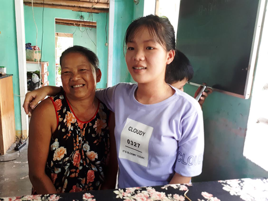

Những điểm 10 đặc biệt

Lần cập nhật cuối lúc Thứ bảy, 08 Tháng 7 2017 16:18 Viết bởi Administrator Thứ bảy, 08 Tháng 7 2017 16:10
Hai điểm tuyệt đối của môn Văn và Sử lần này lại xuất hiện ở Quảng Nam. Trái ngược với vẻ trắng trẻo thư sinh của cậu học trò Trần Đình Duy sở hữu điểm 10 Văn, Mai Thị Tuyết rắn rỏi hơn bởi em sinh ra từ một làng chài ven đô Tam Kỳ.

Mai Thị Tuyết và mẹ.
1. Mai Thị Tuyết (lớp 12/1 Trường THPT Duy Tân, TP. Tam Kỳ) nói mình rất thích đọc sách, thích đi đây đó, tìm hiểu các vùng đất khác nhau thông qua những giá trị văn hóa, lịch sử, con người nơi đó. Vậy nên em yêu thích bộ môn Sử từ những ngày còn nhỏ. Từ niềm say mê này, em tự tìm cho mình những phương pháp tiếp cận khoa học, để Sử không phải chỉ là bộ môn của sự kiện và con số. Em nói mỗi ngày mình dành khoảng hơn 2 tiếng đồng hồ để đọc sách, từ khi còn nhỏ, dù gia đình khó khăn nhưng em đã tự hình thành cho mình thói quen như vậy. Những cuốn sách về văn học dã sử, lịch sử các triều đại hay du ký qua những vùng đất, luôn có sức hút đặc biệt với cô bé có làn da rắn rỏi này. “Em thích đi đây đi đó, tìm hiểu nhiều nét văn hóa, lịch sử, vùng đất con người ở nhiều nơi vì vậy ngay từ năm lớp 10 đã xác định thi khối C. Bây giờ nguyện vọng của em muốn nộp hồ sơ vào ngành Quản trị dịch vụ du lịch của Trường Đại học KHXH&NV TP. Hồ Chí Minh” - Tuyết chia sẻ.
Cùng với việc yêu thích đọc sách đã hình thành từ nhỏ, Mai Thị Tuyết còn bảo em rất thích xem thời sự cũng như đọc báo để xem cách người ta phân tích về những vấn đề xã hội. Bí quyết để học giỏi các môn xã hội của Tuyết, là luôn luôn liên hệ đối sánh. “Đầu tiên mình chủ yếu phải nắm vững kiến thức trong sách giáo khoa, đọc thêm nhiều sách báo. Mình không cần phải thuộc lòng nhưng phải hiểu ở chỗ đó họ nói cái gì. Ngoài ra có những câu đòi hỏi sự tư duy mình phải liên hệ với những vấn đề xã hội hiện nay chứ không chỉ cứ mãi bám vào sách giáo khoa. Với môn Sử, liên hệ đối sánh giữa các sự kiện, các mốc thời gian, các địa danh cũng là cách dễ nhớ” - Tuyết nói. Trong khi đó, thầy giáo Ca Tâm, phụ trách bộ môn Sử trường THPT Duy Tân - nơi Tuyết theo học, cũng là người trực tiếp dạy bộ môn Sử cho em, chia sẻ: “Tuyết nằm trong đội tuyển học sinh giỏi Sử của trường, là một học sinh rất ham học, có tư duy và phương pháp học cực kỳ khoa học. Trong quá trình hướng dẫn thấy em rất đam mê, thường xuyên điện thoại hỏi xin thầy các bộ đề để tự giải. Tôi luôn động viên em, bây giờ thấy học sinh mình điều kiện khó khăn mà đạt kết quả như vậy tôi mừng lắm”. Và cũng không khó để biết được lý do tại sao em lại đạt điểm tuyệt đối môn Sử tại kỳ thi vừa qua, bởi cô gái này đồng thời sở hữu giải Nhất kỳ thi Học sinh giỏi cấp tỉnh năm học 2016 - 2017.
Bây giờ, cùng với các anh chị em của mình, Tuyết hằng ngày phụ giúp cha mẹ các công việc của một gia đình hành nghề sông nước. Ngôi nhà nhỏ nằm ở làng chài nghèo cạnh sông Trường Giang (thôn Tân Phú, xã Tam Phú, TP.Tam Kỳ) với 5 đứa con đang tuổi ăn học, vợ chồng bà Võ Thị Hậu nói, dù cực khổ mấy cũng thấy vui vì con mình học giỏi. Với tổng số điểm 3 môn khối C lên đến 25.75, Mai Thị Tuyết chắc chắn nắm một suất vào giảng đường đại học. Hy vọng cô gái này sẽ hoàn thành ước mơ đi khắp nơi của mình trong vài năm tới…
2. Với sự nỗ lực không ngừng nghỉ, trong kỳ thi tốt nghiệp THPT quốc gia vừa qua, em Trần Đình Duy (học sinh lớp 12/4, Trường THPT chuyên Nguyễn Bỉnh Khiêm, TP.Tam Kỳ) đã đạt được số điểm tuyệt đối ở môn Văn, các môn thi còn lại em cũng đạt số điểm rất cao.
Trần Đình Duy. Ảnh: D.T
Chiều 5.7, sau khi Sở GD&ĐT Quảng Nam công bố điểm thi tốt nghiệp THPT năm 2017, căn nhà nhỏ của gia đình Duy ở tổ Lãnh Thượng 2, thị trấn Đông Phú (Quế Sơn) bỗng trở nên đông vui, rộn rã hơn. Trên gương mặt của những người thân trong gia đình và của Duy luôn hiện hữu niềm vui mừng khi đón nhận thông tin về kết quả kỳ thi. Là học sinh chuyên Anh thế nhưng Trần Đình Duy lại bất ngờ đón nhận điểm 10 từ môn Văn. Chia sẻ với mọi người, Duy cảm thấy ngoài sức tưởng tượng về kết quả nêu trên. Khi điểm được cập nhật trên mạng, bạn bè gửi tin nhắn, gọi điện chúc mừng nhưng em vẫn không tin. Đến khi tự tay nhập số báo danh và tra cứu trên mạng thì em mới vỡ òa vì vui sướng. Cùng với giành được số điểm tuyệt đối ở môn Văn, cậu học trò lớp chuyên Anh còn đạt 9 điểm môn Toán và xuất sắc hoàn thành bài thi môn Anh với số điểm 9.6. Với tổng điểm 3 môn thi thuộc khối D này, cơ hội vào giảng đường đại học của Duy đang rộng mở. “Hiện tại em phân vân lựa chọn nộp bảng điểm dự tuyển vào ngành Kinh tế đối ngoại (Trường Đại học Ngoại thương TP. Hồ Chí Minh) và ngành Báo chí (Trường Đại học KHXH&NV - Đại học Quốc gia TP.Hồ Chí Minh). Với thành quả đạt được hôm nay, em gửi lời tri ân sâu sắc đến ba mẹ và thầy cô, những người đã động viên, giúp đỡ em xuyên suốt trong chặng đường qua” - Duy nói.
Để có kết quả học tập tốt như vậy, Duy cho rằng, trước hết bản thân phải xây dựng được một động cơ học tập nghiêm túc, đúng đắn, trong quá trình học phải có định hướng rõ ràng cho tương lai sau này. Bên cạnh đó, em luôn kết hợp chế độ học tập và giải trí một cách hợp lý để có tinh thần thoải mái nhất. Ngoài học ở trường, trong 3 năm THPT, Duy còn thường xuyên nghiên cứu sách vở, tài liệu ở trên mạng cũng như ở thư viện, từ đó giúp em có được tư duy tổng hợp và hệ thống kiến thức vững chắc hơn. Duy cho biết thêm: “Ngoài sự nỗ lực của bản thân, gia đình là yếu tố quan trọng nhất giúp em có được kết quả như hôm nay. Ba mẹ em là người luôn quan tâm, động viên, tạo điều kiện tốt nhất để em học tập. Gia đình không hề ép buộc mà để bản thân em tự quyết định việc học theo sở trường”.
LÊ QUÂN - DUY THÁI (baoquangnam.vn)
- 26/10/2017 00:00 - 58 học sinh vào đội tuyển thi học sinh giỏi quốc g…
- 04/09/2017 00:00 - Mở thêm cơ hội du học
- 13/07/2017 08:44 - Bộ Giáo dục giải đáp hàng loạt câu hỏi nóng trong …
- 12/07/2017 13:30 - Những lưu ý khi điều chỉnh nguyện vọng
- 10/07/2017 13:55 - Thể lệ trao thưởng Quỹ ươm mầm tài năng đất Quảng …
- 15/05/2017 08:18 - Bộ đề thi tham khảo kỳ thi Trung học phổ thông Quố…
- 07/04/2017 09:34 - Bộ GD&ĐT giải đáp nóng về đăng ký dự thi THPT quốc…
- 04/04/2017 09:54 - 4 điểm khác biệt thú vị giữa tiếng Anh Anh và tiến…
- 01/04/2017 09:30 - Cổng thông tin tuyển sinh của Bộ Giáo dục và Đào t…
- 30/03/2017 08:23 - Thủ tướng chỉ thị bảo đảm kỳ thi THPT, tuyển sinh …